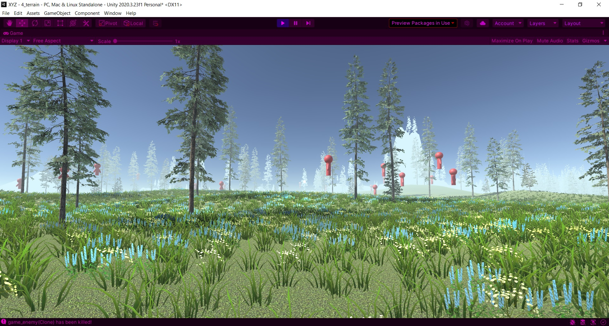

XYZ

This was the First 3D project I made with Unity. I'd worked only once with Unity before,
which was a 2D game. So I was completely new to this. I decided to Create a semi open
world with different areas and a few enemies.
In order to make this work I had to learn the following skills:
In order to make this work I had to learn the following skills:
- Terraforming
- The very basics of 3D movement
- Audio
- unity Basics